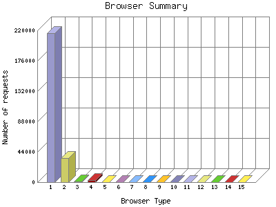

Analog 5.24
Analog 5.24 Report Magic for Analog 2.13
Report Magic for Analog 2.13The Browser Summary identifies the most popular web browsers used to visit
this site.
Browsers are broken down by recognized categories such as
Netscape Navigator/Communicator, Microsoft Internet Explorer, WebTV, Opera
and the like. Within each category is also a subgroup by version number
such as 'MSIE 5.0' or 'Netscape 4.5'.
This report is sorted by number of requests.

| Browser Type | Number of requests | Number of page requests in the last 7 days | Percentage of page requests in the last 7 days | |
|---|---|---|---|---|
| 1. | Netscape (compatible) | 216,026 | 3,837,949,748 | 161.56% |
| 2. | ZoominfoBot (zoominfobot at zoominfo dot com) | 35,461 | 3,764,755,204 | 158.48% |
| 3. | The Knowledge AI | 1,071 | 3,764,755,187 | 158.48% |
| 4. | PRurl | 3,405 | 3,764,755,171 | 158.48% |
| 5. | webprosbot | 7 | 3,764,755,170 | 158.48% |
| webprosbot/2 | 7 | 3,764,755,170 | 158.48% | |
| 6. | DF Bot 1.0 | 225 | 3,764,755,170 | 158.48% |
| 7. | Expanse, a Palo Alto Networks company, searches across the global IPv4 space multiple times per day to identify customers' presences on the Internet. If you would like to be excluded from our scans, please send IP addresses | 65 | 3,764,755,169 | 158.48% |
| Expanse, a Palo Alto Networks company, searches across the global IPv4 space multiple times per day to identify customers' presences on the Internet. If you would like to be excluded from our scans, please send IP addresses/domains | 65 | 3,764,755,169 | 158.48% | |
| 8. | NetSystemsResearch studies the availability of various services across the internet. Our website is netsystemsresearch.com | 21 | 3,764,755,168 | 158.48% |
| 9. | Embarcadero URI Client | 2 | 3,764,755,168 | 158.48% |
| Embarcadero URI Client/1 | 2 | 3,764,755,168 | 158.48% | |
| 10. | User-Agent: Mozilla | 147 | 3,871,295,695 | 162.97% |
| User-Agent: Mozilla/5 | 147 | 3,871,295,695 | 162.97% | |
| 11. | Screaming Frog SEO Spider | 94 | 3,871,295,695 | 162.97% |
| Screaming Frog SEO Spider/10 | 6 | 3,764,755,167 | 158.48% | |
| Screaming Frog SEO Spider/2 | 1 | 3,764,755,167 | 158.48% | |
| Screaming Frog SEO Spider/3 | 2 | 3,764,755,167 | 158.48% | |
| Screaming Frog SEO Spider/4 | 1 | 3,764,755,167 | 158.48% | |
| Screaming Frog SEO Spider/5 | 3 | 3,764,755,167 | 158.48% | |
| Screaming Frog SEO Spider/14 | 1 | 3,764,755,167 | 158.48% | |
| Screaming Frog SEO Spider/6 | 1 | 3,764,755,167 | 158.48% | |
| Screaming Frog SEO Spider/7 | 2 | 3,764,755,167 | 158.48% | |
| Screaming Frog SEO Spider/12 | 3 | 3,234,543,038 | 136.16% | |
| Screaming Frog SEO Spider/13 | 3 | 3,234,543,038 | 136.16% | |
| Screaming Frog SEO Spider/8 | 4 | 3,234,543,038 | 136.16% | |
| Screaming Frog SEO Spider/9 | 67 | 2,704,330,909 | 113.83% | |
| 12. | Python | 14 | 3,818,025,431 | 160.72% |
| Python/3 | 14 | 3,818,025,431 | 160.72% | |
| 13. | Googlebot | 71 | 3,818,025,431 | 160.72% |
| Googlebot/Nutch-2 | 7 | 3,234,543,038 | 136.16% | |
| Googlebot/2 | 47 | 1,113,694,522 | 46.89% | |
| 14. | LWP::Simple | 30 | 3,818,025,431 | 160.72% |
| LWP::Simple/5 | 13 | 2,174,118,780 | 91.52% | |
| LWP::Simple/6 | 17 | 1,643,906,651 | 69.20% | |
| 15. | Safari | 33 | 3,818,025,431 | 160.72% |
| Safari/11601 | 1 | 3,764,755,167 | 158.48% | |
| Safari/10603 | 1 | 3,764,755,167 | 158.48% | |
| Safari/11604 | 2 | 3,764,755,167 | 158.48% | |
| Safari/15609 | 4 | 3,764,755,167 | 158.48% | |
| Safari/16610 | 3 | 3,764,755,167 | 158.48% | |
| Safari/14606 | 2 | 3,234,543,038 | 136.16% | |
| Safari/12604 | 20 | 3,234,543,038 | 136.16% | |
| [not listed: 842] | 719,318 | 1,239,456,565 | 52.18% | |
This report was generated on September 12, 2021 06:19.
Report time frame December 19, 2013 00:28 to October 14, 2020 09:11.
| Web statistics report produced by: | |
| Analog 5.24 | Report Magic for Analog 2.13 |